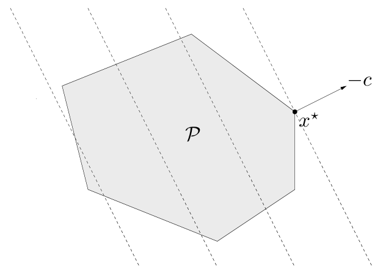
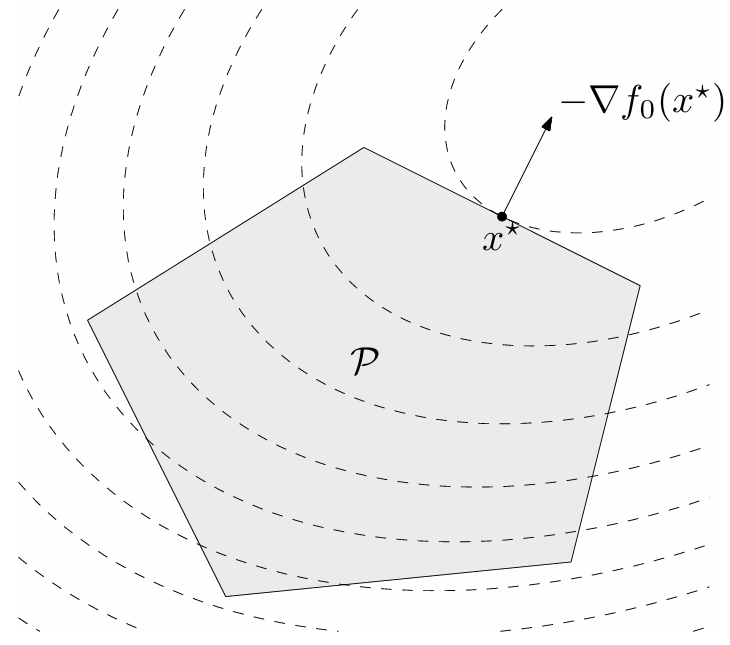

Programas cónicos
Capítulo 1 - Sección 3
\[ \def\NN{\mathbb{N}} \def\ZZ{\mathbb{Z}} \def\RR{\mathbb{R}} \def\media{\mathbb{E}} \def\cov{\text{Cov}} \def\prob{\mathbb{P}} \def\calL{\mathcal{L}} \def\calG{\mathcal{G}} \def\calH{\mathcal{H}} \def\calD{\mathcal{D}} \def\calN{\mathcal{N}} \def\bfa{{\bf a}} \def\bb{{\bf b}} \def\cc{{\bf c}} \def\dd{{\bf d}} \def\hh{{\bf h}} \def\qq{{\bf q}} \def\xx{{\bf x}} \def\yy{{\bf y}} \def\zz{{\bf z}} \def\uu{{\bf u}} \def\vv{{\bf v}} \def\ww{{\bf w}} \def\XX{{\bf X}} \def\TT{{\bf T}} \def\bfS{{\bf S}} \def\bfZ{{\bf Z}} \def\bfg{{\bf g}} \def\bftheta{\boldsymbol{\theta}} \def\bfphi{\boldsymbol{\phi}} \def\bfmu{\boldsymbol{\mu}} \def\bfxi{\boldsymbol{\xi}} \def\bflambda{\boldsymbol{\lambda}} \def\bfgamma{\boldsymbol{\gamma}} \def\bfbeta{\boldsymbol{\beta}} \def\bfalpha{\boldsymbol{\alpha}} \def\bfeta{\boldsymbol{\eta}} \def\bfmu{\boldsymbol{\mu}} \def\bfnu{\boldsymbol{\nu}} \def\bfTheta{\boldsymbol{\Theta}} \def\bfSigma{\boldsymbol{\Sigma}} \def\bfone{\mathbf{1}} \def\bfzero{\mathbf{0}} \def\argmin{\mathop{\mathrm{arg\,min\,}}} \def\argmax{\mathop{\mathrm{arg\,max\,}}} \]
Muchos problemas de optimización convexa pueden escribirse en una forma estándar, a la cual nos referiremos como forma canónica. Una subclase importante de problemas lo suficientemente general es la de los programas cónicos. Un programa cónico es de la forma
\[ \begin{array}{ll} \text{minimizar } & \cc^\top\xx\\ \text{sujeto a } & A\xx=\bb,\\ & D(\xx)+d\in K, \end{array} \tag{1} \]
donde \(\cc,\xx\in\RR^p\), \(A\in\RR^{m\times p}\), \(\bb\in\RR^m\), \(D:\RR^p\to Y\), \(d\in Y\), con \(Y\) un espacio euclídeo y \(K\subset Y\) un cono convexo cerrado.
Algunas elecciones de \(Y\), \(K\) y \(D\) dan lugar a subconjuntos particulares de programas cónicos de especial interés. Estudiaremos en esta sección tres de ellos: los programas lineales, los programas cuadráticos (QP) y los programas semidefinidos (SDP).
La relación entre las clases de problemas es la siguiente:
\[\text{LP}\subset\text{QP}\subset\text{SDP}\subset\text{Programas cónicos}\]
Importante
Un cono \(K\subset Y\) induce un orden parcial sobre \(Y\) definido por \[ x\preceq_K y \iff y-x\in K \]
En particular:
Si \(K=\RR_+^p\), \(\xx\preceq\yy\) si y sólo si \(x_i\leq y_i\) para todo \(i=1,\ldots,p\). Esta es la comparación elemento a elemento a la cual ya estamos acostumbrados.
Si \(K=\SS_+^p\), \[ X\preceq Y \iff Y-X\in\SS_+^p. \tag{2} \]
Observar que (2) es compatible con la notación de matriz semidefinida positiva.
La definición de orden parcial inducido por un cono \(K\) permite interpretar la restricción \(D(\xx)+d\in K\) en (1) como una restricción de desigualdad. En la formulación de los tipos de problema que se presentan en este capítulo se sugiere identificar los elementos correspondientes en cada caso.
Además de presentar su formulación matemática, mostraremos cómo resolver estos problemas en la práctica mediante herramientas computacionales, utilizando bibliotecas de optimización.
Programa lineal
Cuando tanto la función objetivo como todas las restricciones son afines, el problema de optimización se llama programa lineal (LP).
Forma básica de LP
\[ \begin{array}{ll} \text{minimizar } & \cc^\top\xx\\ \text{sujeto a } & G\xx\preceq \hh,\\ & A\xx=\bb, \end{array} \]
donde \(\cc\in\RR^p\), \(G\in\RR^{r\times p}\), \(\hh\in\RR^r\), \(A\in\RR^{m\times p}\) y \(\bb\in\RR^m\).
El conjunto factible de un LP es un poliedro \(\mathcal{P}\). Los conjuntos de nivel de la función objetivo son hiperplanos ortogonales a la dirección \(\cc\). En consecuencia, el punto óptimo \(\xx^{\star}\) es aquel punto de \(\mathcal{P}\) lo más alejado posible en la dirección de \(-\cc\).

La forma estándar de un LP es
\[ \begin{array}{ll} \text{minimizar } & \cc^\top\xx\\ \text{sujeto a } & A\xx=\bb,\\ & \xx\geq \bfzero. \end{array} \]
Una dieta saludable contiene \(m\) nutrientes diferentes en cantidades al menos iguales a \(b_1, \ldots, b_m\). Podemos componer tal dieta eligiendo cantidades no negativas \(x_1, \ldots, x_n\) de \(n\) alimentos diferentes. Una unidad de cantidad del alimento \(j\) contiene una cantidad \(a_{ij}\) del nutriente \(i\) y tiene un costo de \(c_j\). Queremos determinar la dieta más barata que satisfaga los requisitos nutricionales. Esto conduce al siguiente LP:
\[ \begin{array}{ll} \text{minimizar } & \cc^\top\xx\\ \text{sujeto a } & A\xx\succeq \bb\\ & \xx\succeq \mathbf{0} \end{array} \]
Varias variaciones de este problema también se pueden formular como LPs. Por ejemplo, podemos insistir en una cantidad exacta de un nutriente en la dieta (lo que da una restricción de igualdad lineal), o podemos imponer un límite superior en la cantidad de un nutriente, además del límite inferior como se indicó anteriormente.
Consideremos el problema de encontrar la bola euclidiana más grande que se encuentra contenida en un poliedro descrito por desigualdades lineales: \[ \mathcal{P} = \{\xx \in \RR^p \mid \aa_i^\top\xx \leq b_i,\quad i = 1, \ldots, m\}. \]
El centro de la bola óptima se llama centro de Chebyshev del poliedro. Para poder formular el problema, debemos representar la bola mediante \[ \mathcal{B}(\xx,r) = \{\xx + \uu \mid \|\uu\|_2 \leq r\}. \]
Las variables en el problema son el centro \(\xx\in\RR^p\) y el radio \(r\in\RR\). El objetivo, por lo tanto, es maximizar \(r\) sujeto a la restricción \(\mathcal{B}(\xx,r)\subset\mathcal{P}\).
Para definir las restricciones, vamos a usar el hecho que \[ \sup\{\aa_i^\top\uu \mid \|\uu\|_2\leq r\}=r\|\aa_i\|_2\qquad\text{¿Porqué?} \]
En consecuencia, el requisito de que \(\mathcal{B}(\xx,r)\) pertenezca a cada subespacio \(\aa_i^\top \xx\leq b_i\) puede escribirse como \[ \aa_i^\top(\xx+\uu)=\aa_i^\top\xx+r\|\aa_i\|_2\leq b_i, \] lo cual es una desigualdad lineal. En conclusión, hallar el centro de Chebyshev es el siguiente LP en forma de desigualdad:
\[ \begin{array}{ll} \text{maximizar } & r\\ \text{sujeto a } & \aa_i^\top\xx+r\|\aa_i\|_2\leq b_i,\quad i=1,\cdots, m \end{array} \]
Programa cuadrático
Cuando la función objetivo es cuadrática y las restricciones son afines, el problema de optimización se llama programa cuadrático (QP). Aunque la formulación no sugiere directamente un programa cónico, los programas cuadráticos convexos pueden reformularse como programas cónicos equivalentes. Veremos esto más adelante.
Forma básica de QP
\[ \begin{array}{ll} \text{minimizar } & \frac{1}{2}\xx^\top P \xx+\qq^\top\xx\\ \text{sujeto a } & G\xx\preceq \hh,\\ & A\xx=\bb, \end{array} \]
donde \(P\in\mathbf{S}_{+}^p\), \(\qq\in\RR^p\), \(G\in\RR^{r\times p}\), \(\hh\in\RR^r\), \(A\in\RR^{m\times p}\) y \(\bb\in\RR^m\).
El conjunto factible de un QP es un poliedro \(\mathcal{P}\). La figura muestra el punto óptimo \(\xx^{\star}\) y el vector gradiente \(-\nabla f(\xx^{\star})\), perpendicular tanto al conjunto de nivel (propiedad del vector gradiente) como a uno de las caras del poliedro.

La forma estándar de un QP es
\[ \begin{array}{ll} \text{minimizar } & \cc^\top\xx+\frac{1}{2}\xx^\top Q\xx\\ \text{sujeto a } & A\xx=\bb,\\ & \xx\geq \bfzero. \end{array} \]
La distancia euclidiana entre los poliedros \(\mathcal{P}_1 = \{\xx \mid A_1 \xx \preceq \bb_1\}\) y \(\mathcal{P}_2 = \{\xx \mid A_2 \xx \preceq \bb_2\}\) en \(\RR^p\) se define como
\[ \text{dist}\,(\mathcal{P}_1, \mathcal{P}_2) = \inf \{ \|\xx_1 - \xx_2\|_2 \mid \xx_1 \in \mathcal{P}_1, \xx_2 \in \mathcal{P}_2 \}. \]
Si los poliedros se intersecan, la distancia es cero.
Para encontrar la distancia entre \(\mathcal{P}_1\) y \(\mathcal{P}_2\), podemos resolver el QP con variables \(\xx_1\) y \(\xx_2\) definido como \[ \begin{array}{ll} \text{minimizar } & \|\xx_1-\xx_2\|_2^2\\ \text{sujeto a } & A_1\xx_1\preceq \bb_1\\ & A_2\xx_2\preceq \bb_2 \end{array} \]
El único caso en que este problema no tiene solución es si uno de los poliedros está vacío. Por otro lado, el valor óptimo es cero si y solo si los poliedros se intersecan, en cuyo caso \(\xx_1=\xx2\). En cualquier otro caso, los puntos óptimos \(\xx_1\) y \(\xx_"\) son los puntos en \(\mathcal{P}_1\) y \(\mathcal{P}_2\), respectivamente, que están más cerca el uno del otro.
Programa semidefinido
Mientras que en un LP el cono subyacente es simplemente el ortante positivo \(\RR_+^p\), los programas semidefinidos (SDP) constituyen un caso importante en el cual se trabaja con el cono de las matrices semidefinidas positivas \(\SS_+^p\).
Forma básica de SDP
\[ \begin{array}{ll} \text{minimizar } & \cc^\top\xx\\ \text{sujeto a } & x_1 F_1+\ldots+x_n F_n\preceq F_0,\\ & A\xx=\bb, \end{array} \]
donde \(\cc\in\RR^p\), \(F_i\in\SS^p\) (\(i=0,1,\ldots,p\)), \(A\in\RR^{m\times p}\) y \(\bb\in\RR^m\).
Referencias
Boyd, S., & Vandenberghe, L. (2004). Convex Optimization. Capítulo 4. Cambridge University Press.
Tibshirani, R. Apuntes del curso CMU Machine Learning 10-725: Convex Optimization. Teoría I (2018). Disponible en la página del curso.